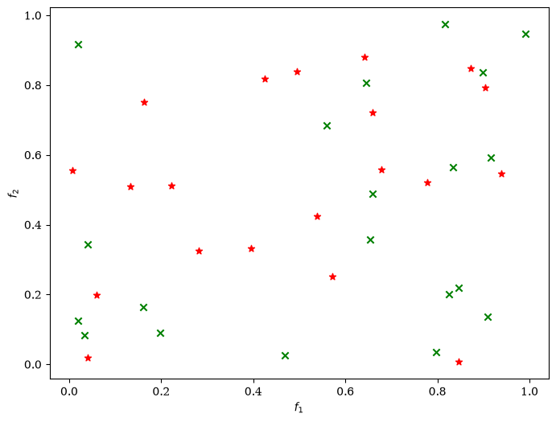
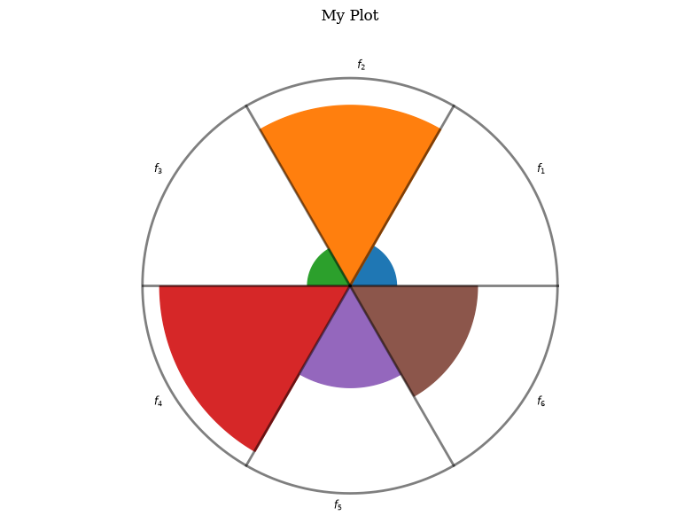

Visualisasi Pareto Front & Multiobjektif
Modul visualisasi Pymoo dirancang menggunakan basis pustaka Matplotlib. Ini memungkinkan pengguna untuk dengan mudah memplot larik NumPy 2D hasil optimasi (seperti res.F) dalam berbagai representasi visual yang indah.
1. Scatter Plot (2D dan 3D)
Merupakan jenis plot dasar paling populer untuk melihat sebaran solusi pada ruang objektif 2D atau 3D. Jika dimensi objektif (M) lebih dari 3, Pymoo secara cerdas akan menggambarkan matriks sebaran perbandingan antar objektif secara berpasangan.
from pymoo.visualization.scatter import Scatter
# Membuat plot 2D
plot = Scatter(title="Optimasi Dua Objektif")
plot.add(res.F, color="blue", facecolors="none")
plot.show()
2. Parallel Coordinate Plot (PCP)
Saat jumlah objektif lebih dari 3 (Many-objective), Scatter plot 3D menjadi sulit diinterpretasikan. PCP memetakan setiap objektif ke sumbu paralel vertikal terpisah, dan setiap solusi digambarkan sebagai garis berkelanjutan melintasi sumbu-sumbu tersebut.
from pymoo.visualization.pcp import PCP
# Membuat plot PCP untuk solusi many-objective
plot = PCP(title="PCP Solusi Banyak Objektif")
plot.add(res.F)
plot.show()
3. Diagram Petal & Radar (Spider Plot)
Bermanfaat untuk membandingkan karakteristik beberapa solusi spesifik (misalnya solusi terpilih vs solusi alternatif). Setiap solusi digambarkan sebagai kelopak bunga (Petal) atau bentuk segi banyak (Radar) di mana jari-jari sumbu menyatakan nilai masing-masing objektif.
from pymoo.visualization.petal import Petal
from pymoo.visualization.radar import Radar
# Menggambar petal diagram untuk beberapa solusi terpilih
plot = Petal(title="Diagram Kelopak")
plot.add(res.F[:3]) # membandingkan 3 solusi pertama
plot.show()4. Heatmap
Menampilkan nilai objektif dalam format peta panas grid berwarna. Setiap kolom menyatakan sumbu objektif dan setiap baris menyatakan satu individu solusi.
Menyimpan Plot Offline: Karena modul visualisasi Pymoo membungkus Matplotlib, Anda dapat langsung menyimpan plot dalam berbagai format dengan mengakses atribut fig bawaan:
plot.do()
plot.fig.savefig("pareto_front.png", dpi=300)